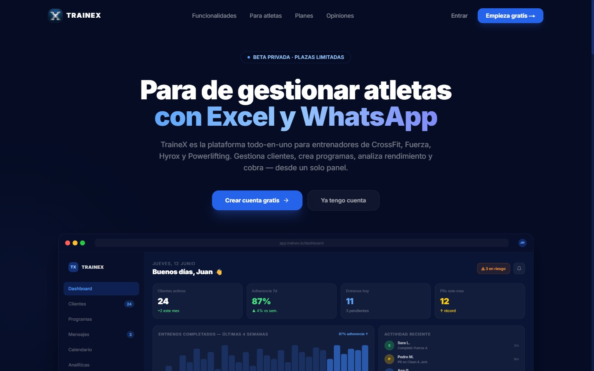

01
SaaS · Sports Tech
TraineX
La plataforma todo-en-uno para entrenadores de CrossFit, Fuerza, Hyrox y Powerlifting.
Sustituye el caos de Excel y WhatsApp por un único panel: gestión de atletas, constructor de programas (AMRAP, EMOM, For Time…), analíticas de adherencia y retención, chat en tiempo real y control de cobros.
- Dashboard con métricas de adherencia y detección de atletas en riesgo
- Constructor de entrenamientos y librería de +100 ejercicios con vídeo
- Mensajería en tiempo real y gestión de pagos con Stripe